科研
我在这里折腾的问题、发表的论文和正在做的项目。
研究方向
小麦产量性状调控的分子机制 水稻产量与品质协同改良 作物优异种质资源创制
论文发表
2026
-
An atypical kinase simultaneously enhances grain yield and appearance quality in rice
2025
-
Recent duplications and rare structural variations revealed by comparative sequence analysis of low molecular weight glutenin subunits (LMW-GS) genes re-identified using LMWgsFinder in 26 genomes of the grass family
2024
-
A novel Effective Panicle Number per Plant 4 haplotype enhances grain yield by coordinating panicle number and grain number in rice
2020
-
Enhanced sustainable green revolution yield via nitrogen-responsive chromatin modulation in rice
2018
-
QTL mapping and candidate gene analysis of peduncle vascular bundle related traits in rice by genome-wide association study
专利
-
OsMADS1 蛋白及其相关生物材料在调控植物高温耐受性中的应用
-
TaSEP-2-4D 蛋白及其相关生物材料在调控植物高温耐受性和产量中的应用
-
The utilization of molecular marker qCT3.12FAZ related to cold tolerance in rice booting stage
科研项目
TaLOG1-1D 调控小麦千粒重的分子机制解析及优异种质创制
2027 年度河南省高等学校重点科研项目，2027.01–2028.12，2 万元。
小麦糖转运蛋白 TaPTR-4D 调控成穗率的分子机制研究
国家自然科学基金青年科学基金项目（C 类），项目编号 32502007，2026.01–2028.12，30 万元。
河南科技学院科研 A 类博士启动经费
2024.03–2029.03，30 万元。
科研掠影
从实验室到田间地头：小麦季的播种、调查与收获，以及和同行们的交流。
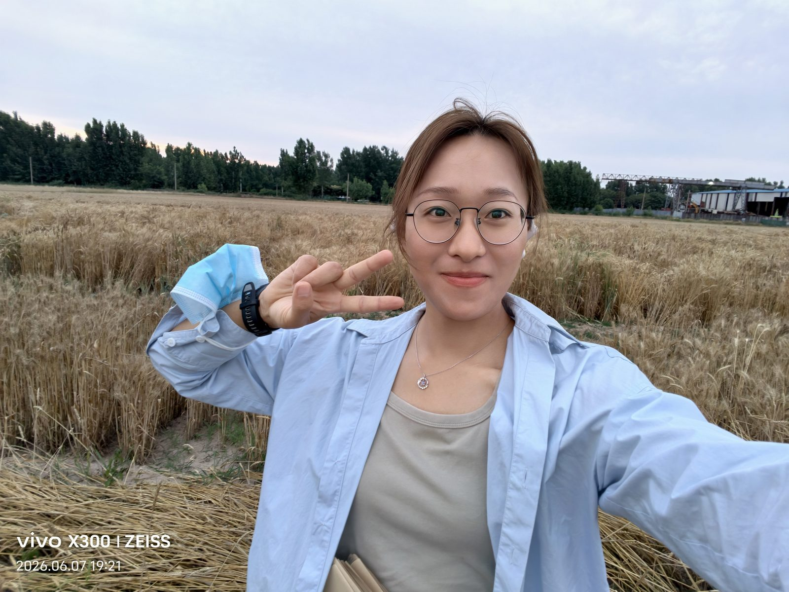
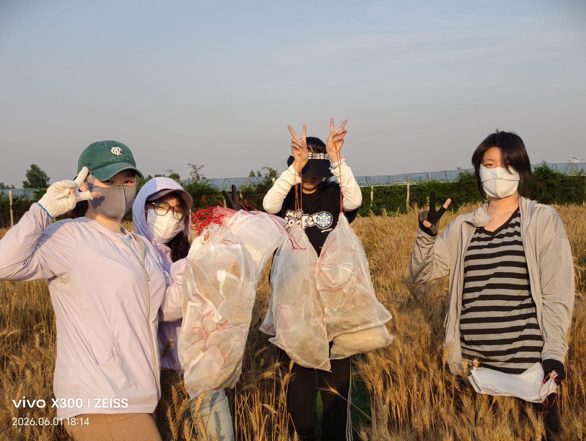
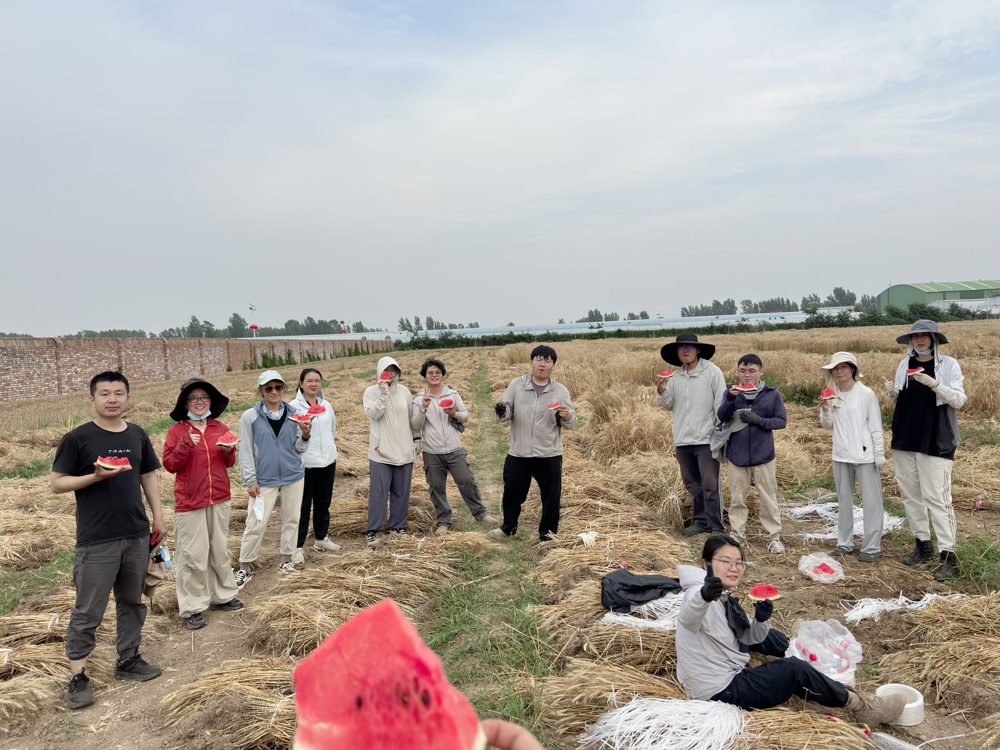
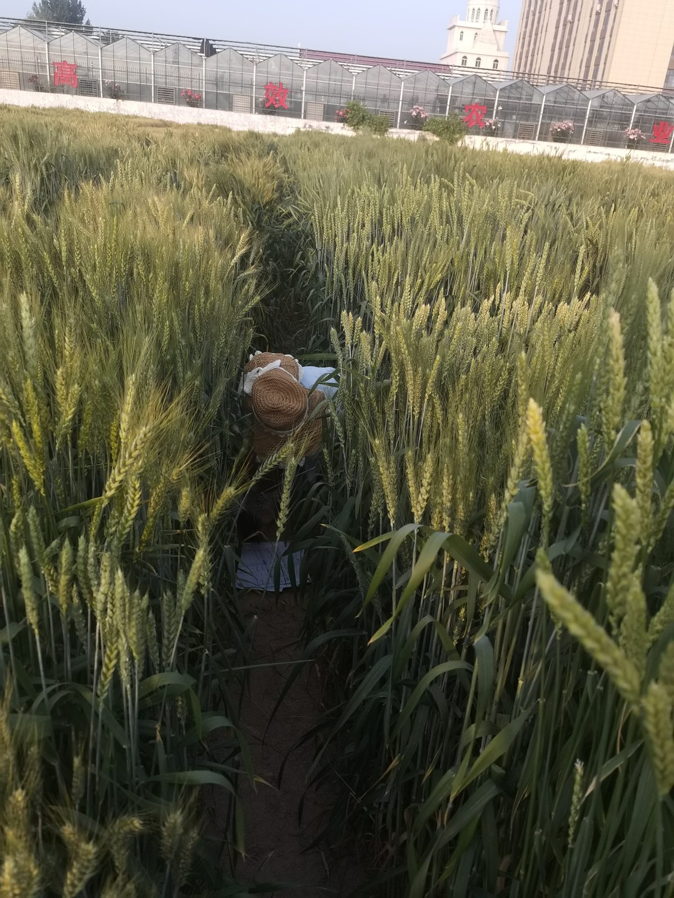
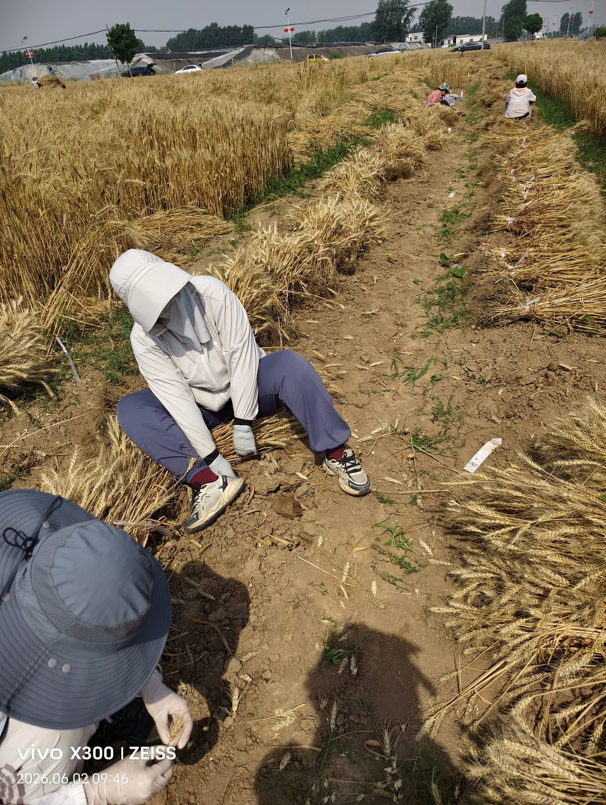
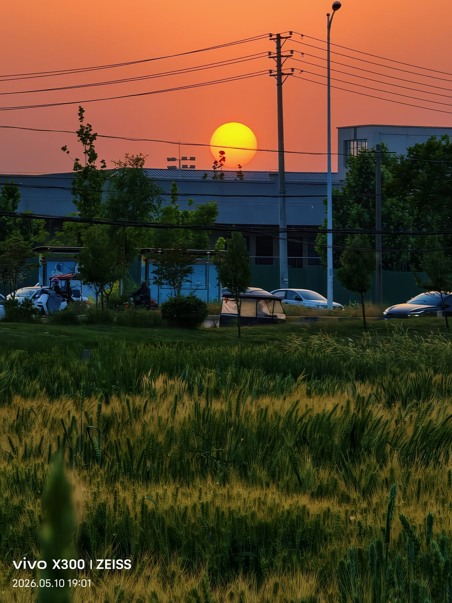
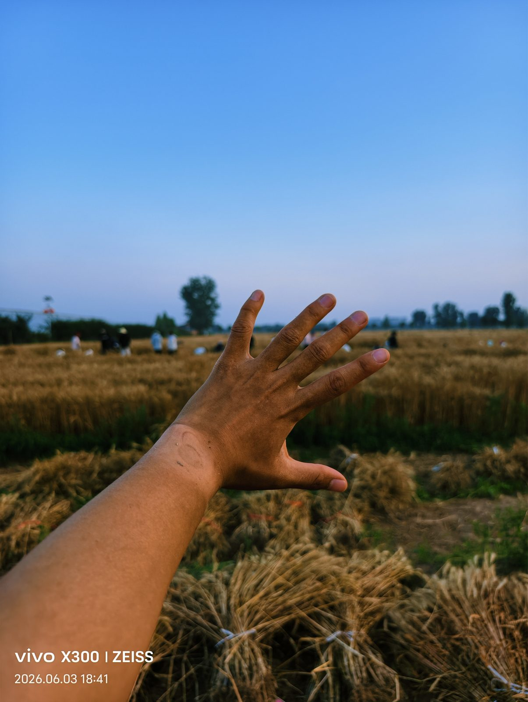
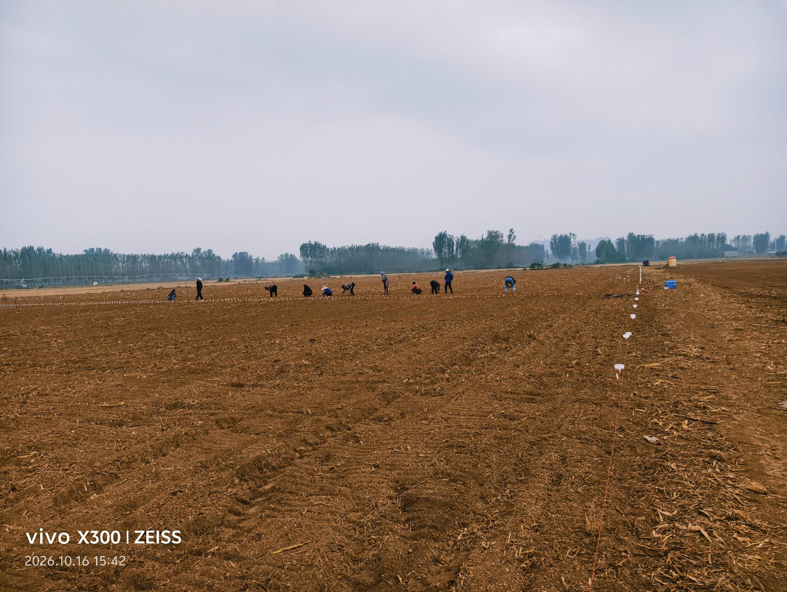
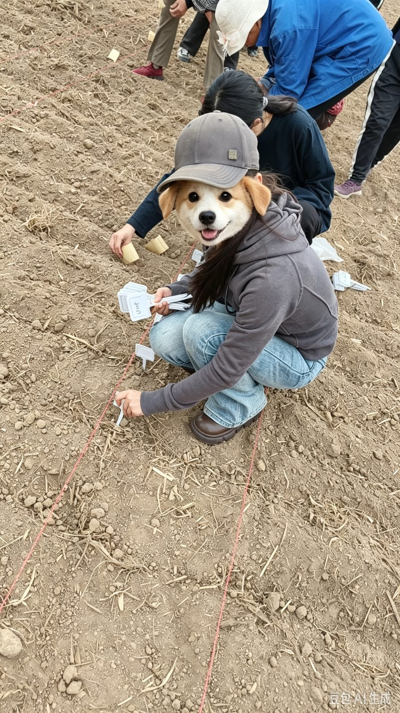
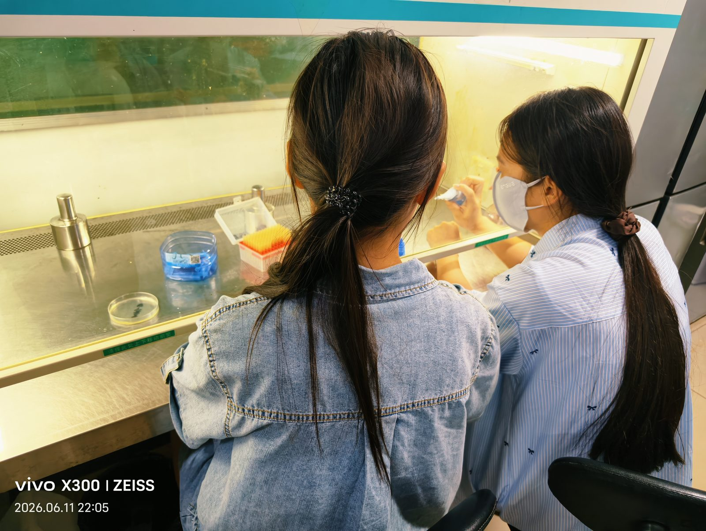
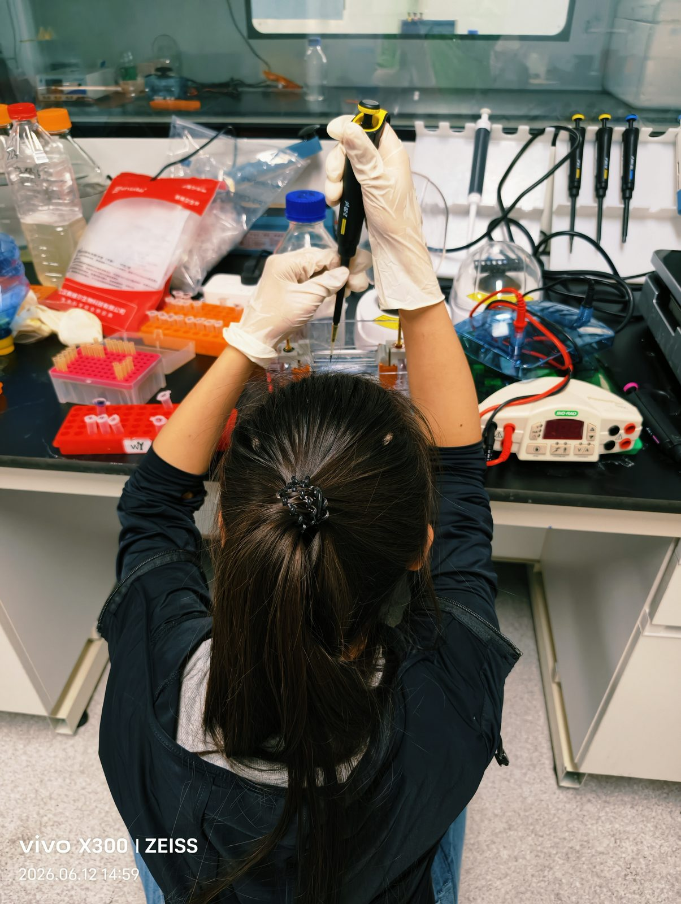
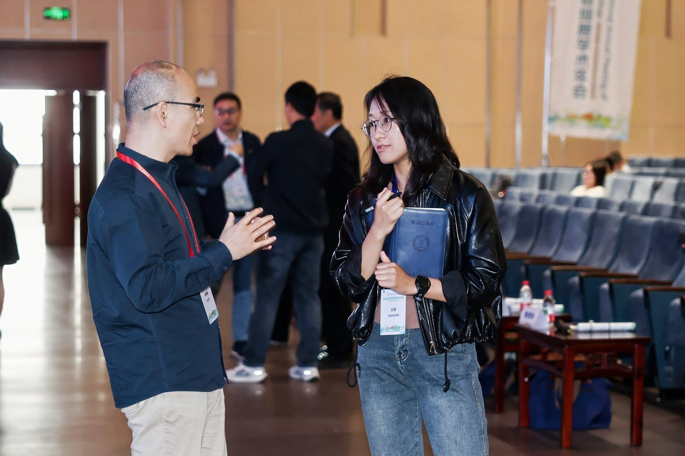